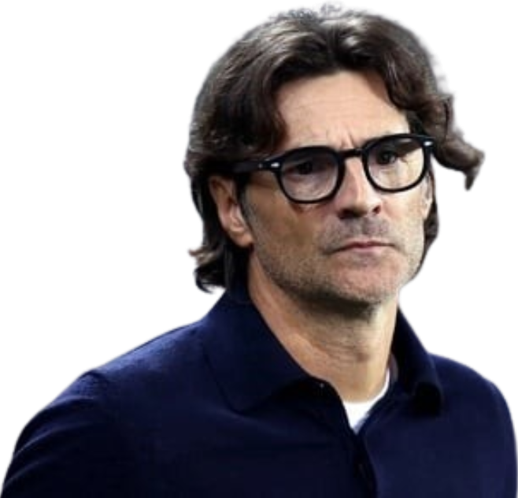
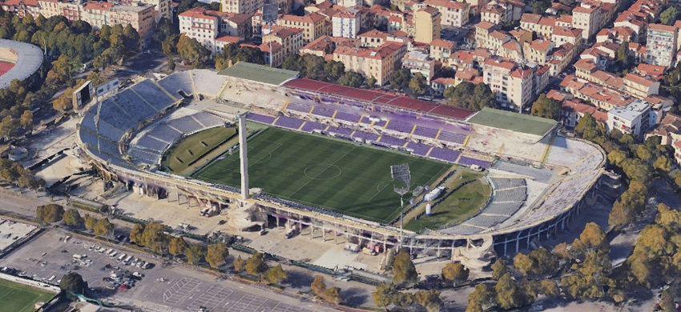

Treinador: Paolo Vanoli
Paolo Vanoli lidera a Fiorentina desde o final de 2025. Com experiência acumulada ao lado de Antonio Conte e passagens pelo Venezia e Torino, o técnico destaca-se pela liderança exigente e por ter devolvido o clube à elite competitiva do futebol italiano em 2026.

Estádio: Artemio Franchi
O estádio Artemio Franchi é o coração pulsante da Fiorentina e uma das joias arquitetónicas de Florença. Inaugurado em 1931, o estádio não é apenas um recinto desportivo, mas um monumento nacional protegido pela sua relevância histórica e estética.

Estilo de Jogo:
O estilo de jogo de Paolo Vanoli na Fiorentina é marcado pelo equilíbrio tático e pela agressividade controlada. Ele privilegia uma equipa compacta que domina os espaços, focando-se na eficiência defensiva para potenciar o ataque.
"Quello che è di Firenze, è della Fiorentina!"